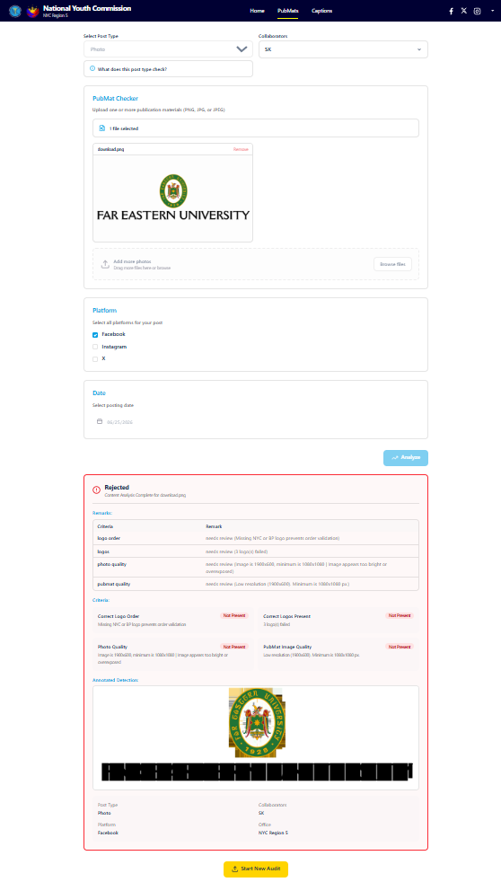
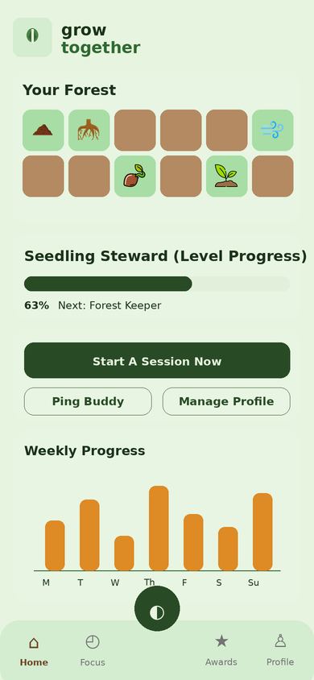
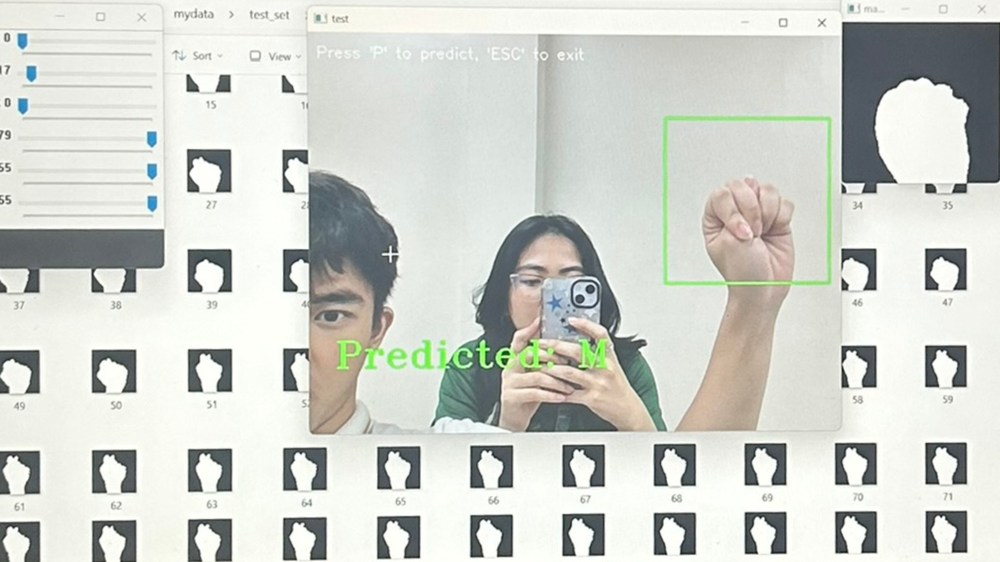

Bachelor of Science in Applied Mathematics - Data Science Track
Far Eastern University - Manila. Dean's Lister, 1st Honors; IAS Parliamentary Examination Top 5; entrance scholarship grantee.
Technical portfolio
Focused on data science workflows, mathematical modeling, machine learning, dashboards, and software prototypes.
Far Eastern University - Manila. Dean's Lister, 1st Honors; IAS Parliamentary Examination Top 5; entrance scholarship grantee.
Manila Tytana Colleges. Graduated with High Honors.
St. Dominic College of Asia. Recognized with honors, leadership awards, Best in Mathematics distinctions, and a Neurolympics bronze medal.
Academic projects
Selected documented projects across AI-assisted auditing, forecasting, business intelligence, computer vision, simulation, and application design.

Project manager and full-stack developer for an AI-assisted auditing system for the National Youth Commission, combining caption verification, grammar review, and public material compliance checks.

Calibrated and simulated Philippine economic trajectory indicators using OLS, steady-state calibration, and sensitivity analysis.

Created a proxy risk index and forecasting framework using climate hazard features and regression-based modeling.

Front-end developer for a collaborative productivity application using gamified focus systems, dynamic Flutter interfaces, AWS-backed serverless architecture, and custom progress visualizations.

Data analyst for an end-to-end BI solution using Spotify Charts data to analyze artist performance, streaming behavior, seasonal trends, and listener engagement.

Developed a Filipino Sign Language alphabet detector with real-time computer vision and accessible front-end guidance.
Technical skills
Core technical strengths from the CV and resume, grouped across analytics, modeling, engineering, and research workflows.
Primary language for data cleaning, modeling, automation, APIs, and machine learning workflows.
Used for interactive dashboards, business intelligence reporting, and insight presentation.
Used for querying, relational schema design, data warehousing, and database-backed projects.
Used for statistical analysis, quantitative research, visualization, and academic modeling work.
Used for reporting, spreadsheet automation, documentation, team coordination, and presentations.
Used for version control, code organization, project development, and collaborative workflows.
Used for responsive web features, backend scripting, deployment awareness, and cloud-based prototypes.
Applied in computer vision prototypes, image preprocessing, and model validation workflows.
Tools & platforms
Tools and platforms I have used or worked with across analytics, development, research, documentation, and creative production.